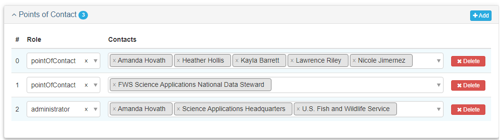
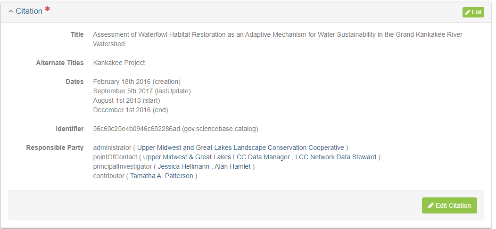
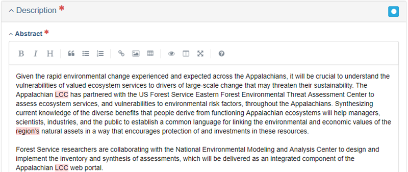

Main Tab
Project Records
The Main tab allows for the creation and/or editing of primary metadata.
| Quick Reference: Project Main Tab | Required? |
|---|---|
| Basic Information: Title, Status | Required |
| Resource Type | Required |
| Point of Contact | Required |
| Citation: Title, Dates, Responsible Parties, Online Resource, Identifier | Required |
| Description: Abstract | Required |
| Time Period | Required |
Basic Information
Record ID
Record ID will be auto-generated. It can be edited but it should only be edited if absolutely necessary (and ideally edited as soon as the record is created in mdEditor).
Title
Enter a concise, yet informative title. Good titles, when they appear in a search, will be understood and traceable.
Status
The Status drop-down menu allows you to select the status of your project. Choose status ONLY from the four following options: completed, ongoing, proposed, or accepted.

Default Locale
Default Locale allows for the selection of Language, Character Set, and Country. English, UTF-8, and USA will be selected by default, but you may change them if necessary. See Settings for instruction.

Resource Types
For projects, the Resource Type should be automatically filled in with the resource type you selected when you created your record. This should be “project” for all SA projects. Name is optional - you can leave this blank or enter a shorten project name.

Point of Contacts
Adding a point of contact gives users information on who to contact should they have a question regarding your project or product.
To add contacts to a metadata record, you must first create/upload the contacts into mdEditor. See the Contact Records Section for more information.
| Role | Contact | Required? |
|---|---|---|
| pointOfContact | FWS Science Applications National Data Steward | Required |
| pointOfContact | Data Steward | Required |
| principalInvestigator | The Project PI and/or producer | Required, if applicable |
| custodian | Data Custodian | Required, if applicable |
| owner | Data Trustee | Required |
| administrator | Project officer, if not the steward | Required |
| administrator | FWS Region (legacy and DOI Unified), FWS Program | Required |
| collaborator | partnership organizations and/or programs | Required, if applicable |

The FWS Science Applications National Data Steward will serve as the long term contact/backup. This way, users have a point-of-contact even if there is a positional change within an organization. Regional Data Steward should be included in addition as a point of contact if available.
Citation
The Citation describes pertinent information about your project such as: responsible parties, internal and ScienceBase identifiers, and any online resources that may relate to your item. The citation much like a peer-reviewed publication citation, provides credit and services as a reference citation. Adding information in the citation will also improve users’ ability to find your items.
Citation Required Fields
Title
The citation title is automatically populated with the title of your record.
Alternate Title
You can add an alternate title if desired - generally these should be shorter than the full Title.
Dates
Enter acquisition, creation, updated, revision from the picklist and then enter the date. At least one date of these date types is required.
Responsible Parties
Responsible parties must include the principal investigator of the project, but may optionally include other responsible parties such as funders (your region and program), partners, collaborators, and contributors. Collaborators could be intellectual participants while contributors could be intellectual and financial participants.
To add contacts to a metadata record, you must first create/upload the contacts in mdEditor. See the Contacts section for more information.
| Role | Contact | Required? |
|---|---|---|
| principalInvestigator | The Project PI | Required |
| coPrincipalInvestigator | co investigators | Required, if applicable |
Online Resource
Enter the Name and URL for the project homepage website, if available.
Identifier
You may enter as many identifiers as desired. The identifier for the repository is required here. If you have other internal IDs for projects, enter them here. Other optional identifiers for projects include: Archive Folder Name.
Best Practice: Create and use internal identifiers that are unique within your region or program for projects and their products. Example: GNLCC2010-11.
If your item does not have a ScienceBase ID yet, ScienceBase will create one automatically upon publishing. If you imported your item from ScienceBase originally, then the SBID will already be included in Metadata/Metadata Identifier and you do not need to include it here. Note that if you edit an item that is already on ScienceBase without using its existing ID, a duplicate item will be created on ScienceBase. Consult the Publish section of this manual to learn more.

Description
Description allows for the addition of the Abstract as well as a Short Abstract, and Supplemental Information.
Abstract
Enter an abstract that succinctly describes the project’s purpose and goals. Include key species or habitats as well.
Tip: Write your project abstract in the present tense if the project is in progress and past tense if the project has been completed.
Short Abstract
Enter a short description, limited to 300 characters, if desired. By default, mdEditor will fill the short abstract with the first 300 characters of the abstract. Best practice is a public outreach abstract for pubic affairs purposes.
Purpose
Enter a short narrative about the purpose of the resource such as the issue or problem that the resource is designed to address and anticipated results or benefits. This aligns with SA Internal Tracking metadata.
Supplemental Information
Enter comments, if desired.

Time Period
Time Period refers to project start and end date.
This set of dates is distinct from the fiscal year of funding. Here you want to indicate the overall project start and end dates. In the Funding section you will specify the fiscal years that funds were allocated.
For each project, add a Start Date and End Date. If the project spanned a single fiscal year, you can use the “Pick a Fiscal Year” dropdown to autofill the date fields.